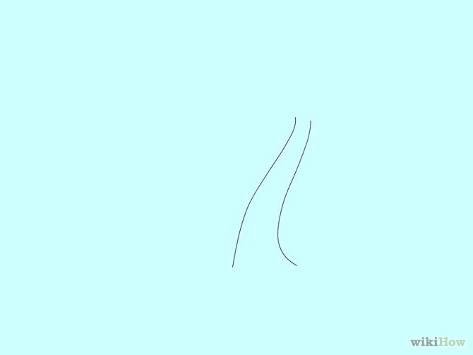

How to Draw a Palm Tree
Have you ever wanted to draw a palm tree but thought is was too hard? Here are the steps to making a palm tree that will make you an expert in no time! Let's begin!
Method 1 of 2: A Cartoon Palm Tree
-

- Draw two slanted vertical lines for the stem of the palm tree.
- Draw a circle on the top to be used as a guideline shape.
- Draw six curve lines within the circle shape for the fan like leaves.
- Start using those leaf lines and sketch out six big leaf shape.
- Add some detail as well.
- Based on the guidelines, start drawing in detail.
- Erase all the guidelines and shapes.
- Color and shade the palm tree.